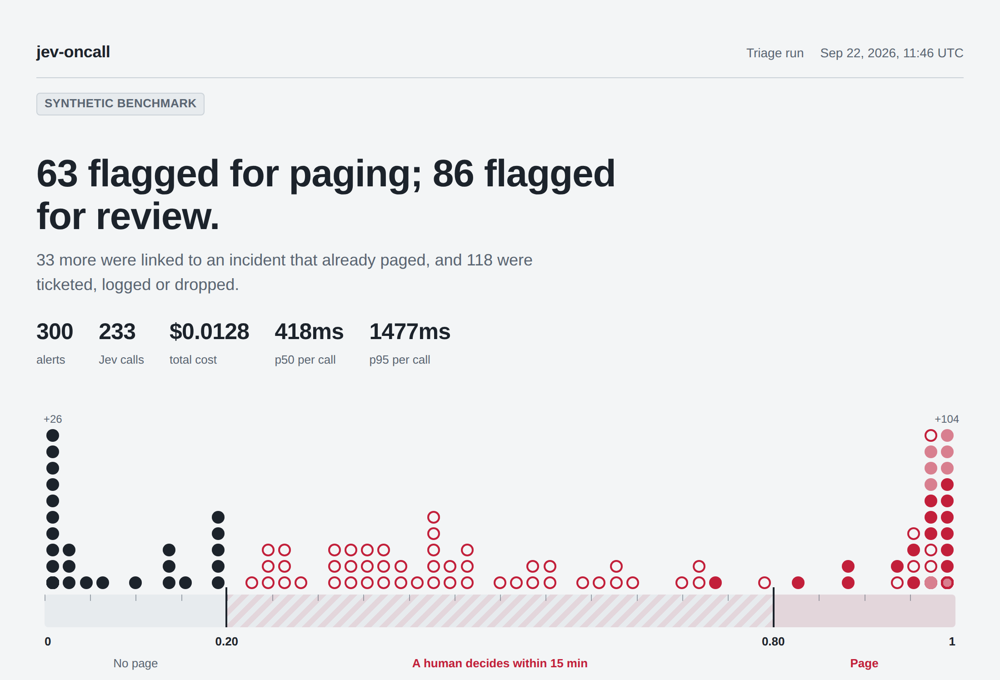

Jev judges.
Code decides.
Alert triage for on-call teams. Every production alert gets one Jev call with four typed questions, and plain, auditable code turns the probabilities into pages, reviews, tickets and linked incidents.
Takes webhooks from Prometheus AlertmanagerGrafanaDatadogPagerDutyany JSON

One measured run
300 synthetic alerts, 16 workers, default 2-second timeout. 233 reached Jev; the other 67 were non-prod and never called the model.
- Per-call latency
- min 204 · p50 418 · p90 674 · p95 1,477 · p99 1,748 · max 1,849 ms
- Wall clock
- 7,642 ms for all 300
- Cost
- $0.0128 total, about $0.04 per 1,000 alerts
- Payload
- 304,175 input tokens, about 1,305 per call
- Fallbacks
- 0
The tail nearly reaches the timeout. The slowest call took 1,849 ms against a 2,000 ms limit. A slower network path would push some alerts onto the fail-open path.
37% of judged alerts landed in REVIEW. That's the band working as designed, and a sign the default bars are wide for this alert mix. evaluate.py --sweep is for tuning them.
# reproduce it python3 generate_alerts.py --count 300 --out bench_alerts.json python3 triage.py --alerts bench_alerts.json --out bench_results.jsonFull write-up on GitHub →
01 · One call, four questions
Jev answers with probabilities, not prose.
Each question has a typed answer, so the code downstream can reason about how sure Jev is instead of parsing text.
actionable
Noul · yes or no
Does a human need to intervene? It can drop an alert only when severity agrees it's noise.
severity
Score · SEV4 < SEV3 < SEV2 < SEV1
P(page) is P(SEV1) + P(SEV2). Routing uses the whole distribution, not just the top label.
team
Choice · your teams
Picks the owner from your team descriptions. Below 0.60, the runner-up team is notified too.
duplicate_of
Choice · candidate alerts + none
Which recent alert causes this one. Those answers become the edges of a dedup graph.
02 · Plain code decides
Unsure costs a review, never silence.
The policy is a few lines of code on P(page). The bars are asymmetric on purpose: dropping an alert takes the most certainty.
No page
TICKET. DROP only if P(actionable) is 0.05 or less.
REVIEW
Low urgency to the owning team. If nobody acks it within 15 minutes, it pages.
PAGE
PAGE_NOW when SEV1 is at least as likely as SEV2.
Non-production alerts are logged by a rule and never cost a model call. Every threshold lives in your config file, and evaluate.py --sweep replays stored answers under other thresholds so you can pick them from data.
03 · Built to fail safe
A paging path that degrades to what you have today.
Fails open
If Jev errors, times out or returns a malformed answer, the alert is routed by its configured severity, exactly as it would be without jev-oncall.
Review clock
A REVIEW pages after 15 minutes unless someone acks it. A resolved alert cancels its review, and resends can't push the deadline back.
Dedup never silences
A linked alert owned by another team gets a REVIEW. A page never dedups onto an earlier alert that got a weaker decision.
Invariant checks
Every run checks that no linked alert outranks its incident root, and that nothing was dropped without a model judgment.
Pinned model
Calls pin jev-1.13.0, not an alias, so a new release can't shift probabilities under your thresholds.
One key per call
A call and its retry share one Idempotency-Key, so a client timeout never judges, or bills, the same alert twice.
04 · Integrations
Plugs into the alerts you already have.
jev-oncall judges and records decisions today. Sending them onward is next on the roadmap.
Takes webhooks from
- Prometheus Alertmanager bearer token
- Grafana Alerting HMAC
- Datadog HMAC header
- PagerDuty v2 / v3 HMAC
- Generic JSON HMAC header
Gives you today
- Live dashboard /dashboard
- Decisions as JSON /recent
- Reviews awaiting an ack /pending
- Ack a review POST /ack/<id>
- Offline replay and sweep evaluate.py
Not built yet
- Shadow mode roadmap
- Slack with an Ack button roadmap
- PagerDuty and Opsgenie paging roadmap
- Jira and Linear tickets roadmap
- Durable review queue roadmap
05 · Try it
A real incident, replayed in five minutes.
The demo runs Prometheus, Alertmanager and jev-oncall with Docker Compose. Prometheus fires a staged incident and Alertmanager delivers it exactly as it would in production.
git clone https://github.com/mingleiw/jev-oncall cd jev-oncall/demo echo "TYPESAFE_API_KEY=<your key>" > .env # optional docker compose up --build # then open http://localhost:8090/dashboard
- A database runs out of connections, and checkout and payments fail because of it. Dedup can link them to that one root cause.
- Noise arrives with it: a staging disk alert, an expiring certificate, and an alert that clears on its own and sends its resolve.
- Two severities are mislabeled: a slow report job marked critical, and a homepage slowdown marked as a warning while conversion falls 22%.
- Without a key you see today's baseline, routed by configured severity. With one, compare what Jev changes.
06 · Configure
Your teams, your thresholds, one file.
Every section is optional. Unknown keys and out-of-range thresholds stop the server before it triages anything, because a typo that silently kept a default would change who gets paged.
[teams] database = "databases, connection pools, caches" network = "CDN, edge, DNS, TLS certificates" [policy] page_bar = 0.80 no_page_bar = 0.20 dedup_bar = 0.70 review_ack_min = 15 [topology] payment-service = ["checkout-api"]
Judge every alert.
Keep the page path safe.
jev-oncall is open source under the MIT license. Read the code, run the demo, and tune the policy on your own history.